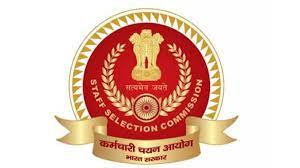

|  |
WAY TO SSCHere you will get everything you need to crack SSC exam |

During the preparation, a student needs various authenticated resources to keep the boost in their preparation since SSC exams such as CGL, CPO, CHSL,JE, MTS, GD, STENO, etc are one of the most prestigious examaminations in India, so the level of competition is necessarily tough. To get rid of this competiton, We, a community of aspirants and the qualified proffessionals are here to provide you all the required material for these exams whether it be free videos, Ebooks, quizzes, previous year papers on this website.
AND ALL THIS IS FOR FREE!!!